Bem-vindo ao Tisgo Photos!
Um projeto totalmente dedicado à arte da fotografia, onde cada clique conta uma história. Meu objetivo é capturar a essência de momentos únicos, explorando paisagens naturais, detalhes arquitetônicos e elementos que muitas vezes passam despercebidos no dia a dia.
A fotografia não é apenas uma arte visual, mas uma forma de expressão que pode conectar pessoas, provocar emoções e guardar memórias para sempre. Por isso, cada trabalho meu é desenvolvido com atenção, criatividade e um olhar sensível para os detalhes.
Com uma abordagem criativa e profissional, estou sempre em busca de novos desafios e colaborações que possam enriquecer o meu portfólio. Gosto de trabalhar com diferentes estilos, desde cenas urbanas dinâmicas até ambientes tranquilos da natureza, explorando a luz, as cores e as texturas em cada fotografia.
Sinta-se à vontade para explorar o meu portfólio e descobrir a beleza dos momentos capturados. Seja para projetos pessoais, comerciais ou colaborações artísticas, estou aberto a parcerias que tragam significado e inovação ao meu trabalho.
Obrigado por visitar o meu site! Entre em contacto para saber mais, colaborar ou simplesmente compartilhar ideias. Será um prazer ajudá-lo a transformar ideias em imagens memoráveis."
